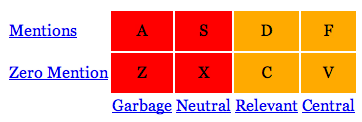
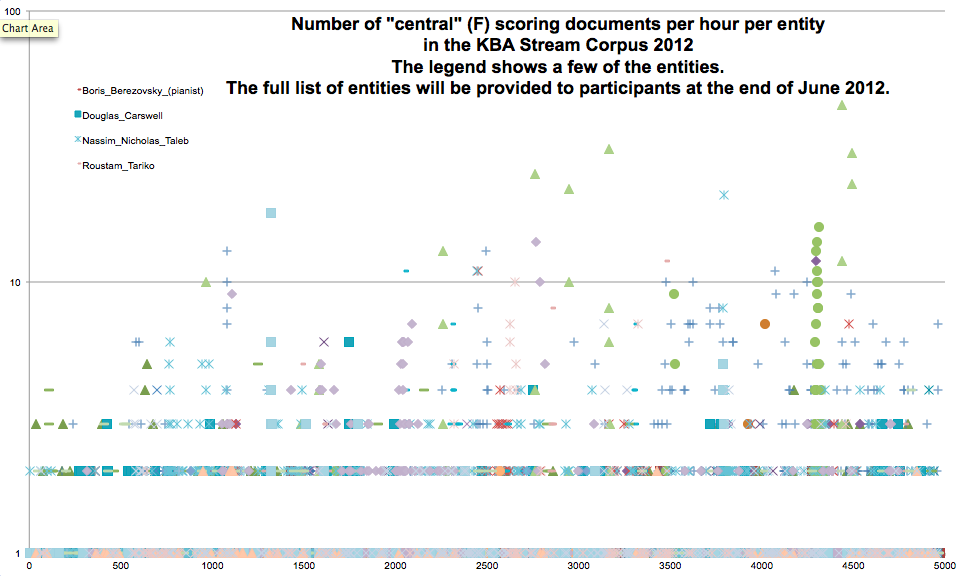

Cumulative Citation Recommendation 2012
(kba-ccr-2012)
This page is an archival record of the first KBA task, which ran in NIST's TREC 2012.
CCR task: filter a stream for documents relevant to a set of entities.
11 teams submitted 43 runs to TREC KBA 2012. The papers and run data will be made available by NIST in February 2013.
Questions & Answers
-
Q: How does kba-ccr-2012 differ from querying for information about entities in a regular text corpus?
A: The stream structure of the KBA corpus allows the topic entities to evolve. This means that a relevant document from later in the stream might not have been relevant to that entity earlier in the stream.
-
Q: How do the KBA query topics differ from topic filtering?
A: Using entities as filter topics differs from traditional filtering tasks in at least two ways: 1) as mentioned above, entities can evolve as the stream progresses, and 2) unlike traditional topics defined by a list of keyword queries (a so-called "profile query"), entities are described by semi-structured articles in a KB like Wikipedia, Facebook, LinkedIn, Crunchbase, etc. Such KB articles are more human-centric and also provide richer material for modeling. For the kba-ccr-2012 task, we are using entities from the the English Wikipedia snapshot created in early January 2012.
-
Q: What do you mean an entity can evolve in time?
A: The stream nature of KBA allows the target entity to "move" as accumulated content implies modifications to the attributes, relations, and free text associated with a node. For example, the South African painter Gavin Rain has an exhibit at the Venice Biennale. After his participation was announced, a controversy emerged about the South African pavilion at the exhibit. To detect the pertinence of this controversy to the Gavin Rain KB node, a system must first detect the new relationship implied by the earlier article about his participation.
-
Q: What is the cutoff?
A: The "cutoff" is a key concept in defining the kba-ccr-2012 task. KBA is motivated by the many large streams of unstructured data that people interact with on the Internet, such as news wires and the on-going edits in Wikipedia. By definition, these streams do not have beginning or end points. However, an structured evaluation like TREC must select beginning and end points. In fact, to accurately mimic real streams, we must select three moments:
- start date of the stream corpus.
- cutoff date after which a fully automatic system should not access human feedback for verification of its results, i.e. must run open loop. For TREC 2012, the cutoff is defined by the English Wikipedia snapshot from January 2012, which completed on January XX, 2012.
- end date the stream corpus.
We sometimes refer to the time between start-and-cutoff as the "training time range" (TTR) and the time between cutoff-and-end as the "evaluation time range" (ETR).
-
Q: What is the timeline for this task?
A: Key dates:
- now NIST accepting KBA Data Access Agreements -- see links below.
- first week of June: Full corpus with NER available (done, see below for more details)
- second week of June: Annotation data for beginning of stream for sample entities released (done, see below)
- June 1, 2012 at 11:30 EDT: Online meeting and conference call to describe annotation and answer questions (done.)
- June 22, 2012 at 11:00 EDT via https://join.me/nist-trec-kba you must install the join.me client to enable audio (both listening and speaking) Online meeting and conference call to describe annotation and answer questions
- June 29, 2012 All topic entities and annotation data for beginning of stream for all entities released
Monday September 17, 2012 by 2:00am on Baker Island (10:00am eastern US time, 2:00pm UTC): Deadline for submitting runs to NIST's web submission form. Note that "by midnight on Baker Island" means the last moment of that Thursday anywhere on the planet. Here is a clock the time on Baker Island right now. It corresponds to noon the next day UTC and 8am on the east coast of the US.
done: Full evaluation data and tools released to teams who submitted runs.
October 15: Submission deadline for TREC Notebook papers.
September through November: Discussing refinements to CCR and possible new tasks for KBA 2013
- November 6-9 2012: TREC Conference in Gaithersburg, MD.
Plenary speakers:- Laura Dietz & Jeff Dalton - UMass_CIIR
- Miles Efron - uiucGSLIS
- Gebrekirstos Gebremeskel - CWI
- Xitong Liu - udel_fang
- Edgar Meij - UvA
-
Q: What text in the corpus is being evaluated for this task?
A: Only those documents that have 'cleansed' text are candidates for the task. Other documents can be ignored for KBA CCR 2012; they will not be judged. The other languages in the corpus may be useful for future tasks. We generated 'cleansed' for documents that had a reasonable chance of being English. The judgments generated by NIST annotators were only for documents that have 'cleansed.'
-
Q: What is the corpus?
A: The kba-ccr-2012 task can be executed against a wide range of corpora that have timestamps. For TREC 2012, we are using the kba-stream-corpus-2012.
-
Q: I see that the target corpus has three parts. Is there a chronological ordering across all three subcorpora of "news" "linking" and "social"?
A: Yes, every stream-item has a stream_time and also a stream_id. See structure in JSON schema for stream-item.json, which extends corpus-item.json. Note that these JSON schemas are deprecated, and the corpus is now in thrift format -- see details on the corpus description page.
-
Q: What annotation data will be available?
A: We are providing the assessors judgments (aka "annotation data") for corpus documents from the months of November and December 2011. Teams can train systems on this data. The task is to assign relevance scores to documents in the months from January through April in chronological order.
-
Q: When will this annotation will be available?
A: Now. See timeline.
-
Q: How will the stream be annotated?
A: In the terminology of Wikipedia, a link could be a citation, external link, or other form of hyperlink to a page outside the KB. Wikipedians create links to external content for many reasons. Some of these reasons are repeatable in the sense that annotators with modest training would agree on which links to create. In designing the annotation procedure for KBA, we sought to capture these repeatable reasons for linking in simple guidelines that assessors at NIST and elsewhere can easily apply. Our annotation guidelines include documents that do not explicitly mention the target entity, however this is a rare case -- approximately 4% of citations in Category:Living_people do not mention the person.
-
Q: What documents are relevant to an entity?
A: A document is relevant if a reader can learn something about the entity from the reading the document.
-
Q: How should I interpret "learn" in this definition of relevant? Is a document relevant if it contains any information about the input entity, or only if it contains new information compared to what is already known about the entity in the KB (at the cutoff date)?
A: The former, not the latter. For KBA 2012 there is no novelty component. We have ideas about how to introduce novelty next year.
Here is how to think about the use of the word "learn" in the definition of relevance: imagine using the wikipedia article to identify (disambiguate) the entity, and then imagine forgetting all the info in the wikipedia article and asking with the text provides any information about the entity.
To be more concrete, here is the annotation task performed by the NIST assessors. This was discussed on the first conference call, and will be discussed more on the second conference call:
This two-by-four grid has the following row and column definitions:
Rows:
- Mentions: Document explicitly mentions target entity, such as full name, partial name, nickname, pseodonym, title, stage name.
- Zero Mentions: Document does not directly mention target. Could still be relevant, e.g. metonymic references like "this administration" --> "Obama". See also synecdoche. A document could also be relevant to the target entity through relation to entities mentioned in the document -- apply this test question: can I learn something from this document about the target entity using whatever other information I have about the entity?
Columns:
- Garbage: not relevant, e.g. spam.
- Neutral: Not relevant, i.e. no info could be deduced about entity, e.g., entity name used in product name, or only pertains to community of target such that no information could be learned about entity, although you can see how an automatic algorithm might have thought it was relevant.
- Relevant: Relates indirectly, e.g., tangential with substantive implications, or topics or events of likely impact on entity.
- Central: Relates directly to target such that you would cite it in the wikipedia article for this entity, e.g. entity is a central figure in topics/events.
-
Q: Whoa! What is with the huge grid of judgments!? The run submission format specifies only True/False with a confidence score. How does that map on to this grid?
A: Idealistic Answer: Systems should aim to replicate the "central" judgment, i.e. to propose articles that a human would want to cite in the Wikipedia article. As described above, we blindly assume that the information about the entity contained in the document is not already provided by other cited references in the Wikipedia article.
A: Practical Answer: Even though the judgments from assessors are multi-valued, we can collapse the 2x4 grid into True/False regions in a few different ways. This allows everyone to measure systems against these different definitions of True/False. For example, the upper-right two cells D+F can be one definition of True, with all others binned as False. This means that participants should decide which portion of the grid they want to target, and you should tell us about this in your run submission metadata. For example, if you feel that your approach is better suited to identifying D+F, then do so and tell us about it. If you want to target some other binning, such as F+V, then go ahead! Just identify it in the 'system_description' part of your run submission.
A: Data-Oriented Answer: very few of judgments have landed in the lower-right grid cells of non-mentioning-yet-relevant. Here are counts of judgments from the first couple weeks of the four-week annotation exercise -- we will update this with final counts in a couple weeks:
contains_mention 7991 3862 13971 7806 zero_mention 15367 163 61 0 garbage neutral rel central A: Strategic Philosophical Answer: The kba-ccr-2012 task has an element that is like coreference resolution. Our goal is to go beyond coref and exercise the streaming nature of real world KB building efforts. For this first year, we made the simplifying decision to avoid novelty, which is the most straightforward way to excerise the streaming context. Operating within this constraint, we decided on this citation-worthiness-type task, which has some uncomfortable wiggle room around the definition of "central". Whether this "Would-you-cite-it?" judgment works as a retrieval task is part of what we hope to learn from this first year. Note that this is essentially equivalent to nominating a document as source material for a KBP-style "cold start" population of a KB record about the entity. At a minimum, we will be able to measure multiple flavors of streaming coref by binning D+F or S+D+F, and we may succeed in measuring systems that can distinguish D from F. To enable this, we plan to measure interannotator agreement on D-versus-F.
-
Q: Given an input entity, the output effectively is a scoring of all documents that mention this entity. Is there any limit on the number of records returned?
A: There is no limit. However, we expect all participants to follow the rule that judgments are rendered on an hour-by-hour basis in chronological order without going back to promote documents using information from the future.
-
Q: Is there any sample annotation?
A: Yes, here is a sample for four entities from before the cutoff. Data for all of the target entities from before the cutoff will be released at the end of this month (June 2012). Note that the annotation data is the same format as run submission format with two more columns::
- seventh column: integer in [-1, 0, 1, 2] corresponding to relevance judgment in ['garbage', 'neutral', 'relevant', 'central']
- eigth column: integer in [0, 1], which is boolean indicating whether the document contained a mention of the entity or not.
-
Q: What does the rest of the time series look like?
A: Here is a plot of the number of F-annotated ('central') documents per hour per entity (NB: here a document scored with "F" is one that the annotators marked as "central" using the grid of annotations above; it is not an F_1 score, the harmonic mean of precision and recall:
 -
Q: What about novelty?
A: In kba-ccr-2012, there is no novelty requirement, so if Justin Bieber were a target entity (he is not) and he happens to produce a new album, and two hundred content items announce it, then in principle they are all correct choices -- they all contain information that pertains to that KB node.
-
A: What about salience?
Q: In kba-ccr-2012, there is no salience requirement. If a content item clearly refers to or pertains to the target entity -- even only tangentially -- such that a reader can learn something about the entity, then it is relevant. This probably allows trivial algorithms to get many correct answers, which will cause both simple and sophisticated systems to receive very similar scores. While we would like to differentiate sophisticated systems, we must keep the first year's annotation task as simple as possible. We hope to construct a baseline measure that would subtract such easy responses and provide a means of differentiating sophisticated systems.
-
Q: Will the Wikipedia edit history be annotated?
A: In future years, it may prove useful to manually label Wikipedia edit history for a task. However, we do not need this for kba-ccr-2012.
-
Q: Will the annotators judge the entire corpus?
A: No. We are feeding a subset of the corpus to the annotators. The system prioritizing documents for the annotators is like a high-recall KBA system, however we retrain it periodically on the judgments as they become available. This is similar to adaptive filter systems used in TREC 2002 Filtering. Participants' systems will probably find some true positive results that we did not send to the annotators in the original annotation project in June 2012. We will gather this pool of results that were highly ranked by participants' systems but not previously assessed by NIST annotators. By judging a sample of this pool, we will measure the recall of the tools that created the subcorpus for the original annotation project.
- Ian Soboroff, Ellen Voorhees, and Nick Craswell (September 2003), Summary of the SIGIR 2003 workshop on defining evaluation methodologies for terabyte-scale test collections SIGIR Forum, vol. 37, no. 2 (Fall 2003)
- Ian Soboroff and Stephen Robertson (July 2003) Building a Filtering Test Collection for TREC 2002 Proceedings of the 26th Annual International Conference on Research and Development in Information Retrieval (SIGIR 2003), Toronto, Ontario, Canada.
-
Q: What about feedback?
A: The cumulative citation recommendation task gets progressively harder as the stream pushes the target around without confirmational feedback from human curators. This reflects real KB evolution, in which human curators tend "hot" nodes while mostly ignoring the long tail of not-yet-on-fire nodes. Fortunately, difficulty increases gradually with duration of accumulation and we can use this in measuring performance. A longer evaluation time range (after the cutoff) corresponds to nodes that receive less frequent editorial attention. See time lag plot in slides presented at TREC 2011 planning session, which suggest that Wikipedians' reaction time to news events is only slightly better than random. We plan to write up more details about those plots in a brief note.
-
Q: What are the query topics for kba-ccr-2012
A: We have selected a set of ~50 people and a few organizations from Wikipedia's Living_people category. We avoided actors, atheletes, and politicians. We focused on entities with complex link graphs of relationships with other active entities. For example, Alisher Usmanov is a fascinating Russian with many business holdings and an active public persona.
-
Q: How will the entities be distributed to teams?
A: As illustrated in this sample set of entities, entities are defined in a JSON document according to the filter-topics.json schema. A file of this type will be emailed to registered teams on the date indicated in the timeline (above).
-
Q: Are all the entities mentioned in the stream corpus?
A: All target entities receive a moderate number of mentions in the stream corpus: between once per day and once per week.
-
Q: Will all of the filter topics be available up front?
A: Yes, all the queries will be available at the same time, so that one could process the stream just once.
-
Q: Is their ambiguity in the definition of the filter topics?
A: For KBA 2012, we are defining entities by specifying their "urlname" in the English Wikipedia snapshot from early January 2012. The primary "urlname" combined with specifying that particular snapshot is an unambiguous definition of an entity. "primary" urlname means the unique urlname that is not a redirect to the article about the entity. See this sample, which is based on this schema
-
Q: What metrics will be used to evaluate teams?
A: At a minimum, we will compute precision, recall, and F_1 curves as a function of relevance cutoff, and the area under the F_1 curve. We may also consider ROC curves. We will also compute metrics such as ERR that treat the result data as lists ordered on confidence.
-
Q: What motivates the different metrics?
A: KBA systems running in a production environment might be used in two very different ways: 1) to select a substream of data for processing by other machines, or 2) to prioritize a substream for consumption by humans. In the former case, one expects the machines to use a confidence cutoff and consume all results above the cutoff. Precision/recall/F_1 are the most useful metrics for this use case. In the latter case, one expects the human to process the results in sorted order and become exhausted or lose patience the deeper they go in the list. Cascade-style metrics, like ERR and NDCG, are more useful for this use case. We plan to measure both.
-
Q: How does the hourly structure of the corpus interact with metrics?
A: We can compute metrics like F_1 and ERR on each hour individually and average. We plan to compare this to computing metrics on the sum of all hours.
-
Q: Will the documents in the TREC KBA 2012 corpus contain additional URLs that we can crawl to "expand" the document?
A: Yes. Since those documents may contain information about the world after that moment in the stream corpus, we ask that you identify runs that use this information by labeling them as "other" and including text in "description" field of the filter-run JSON document.
-
Q: What approaches work for handling a corpus of this size in the stream-like fashion required for this task?
A: The corpus is organized into ~4300 hourly batches to facilitate processing the corpus sequentially in batches of 10^5 docs. Several architectural approaches can work for processing these batches. Two broad classes of architectures are:
- Pre-indexing: you can index the entire corpus ahead of time in a search engine like indri, solr, elasticsearch, or some other document database system, and then simulate an hourly stream by issuing ~4300 queries with a time range restrictions for each hour. A benefit of this approach is that such text search engines have processing pipelines that you might use for executing per-document analytics of your choice. In implementing such an approach, you may be tempted to use corpus-wide ranking algorithms that incorporate statistics from documents in all hours of the corpus. Please label such runs as "other" and explain what you used.
- Batch processing: you can iterate over the corpus as a sequence of ~4300 batches. This can be implemented using a MapReduce framework like Hadoop or even BashReduce.
-
Q: What is the format for submitting runs?
A: The output formats are described by JSON schema documents in http://trec-kba.org/schemas/v1.0/ and also illustrated by this toy KBA system written in python. This toy system illustrates how to load the corpus and generate a run for submission.
A: A submission consists of a single text file in a format that differs from most TREC submissions. The file may contain comment lines that begin with a #. The first line must be a comment containing a JSON string in the filter-run.json schema. Subsequent lines may be comments or results. Results lines must contain exactly five columns separated by at least one white space. The width of the columns in the format is not important. However, each non-comment row must have exactly five columns with at least one space between the columns.
All submissions must be compressed (gzip or bzip2) -- be sure to put ".gz" or ".bz2" at the end of yoru file name.
For example, here is an output file generated by toy_kba_system.py
#{"team_id": "CompInsights", "run_info": {"num_entities": 4, "num_stream_hours": 3}, "topic_set_id": "sample-trec-kba-topics-2012", "corpus_id": "tiny-sample-of-hourly-corpus", "task_id": "kba-ccr-2012", "system_id": "toy_1", "$schema": "http://trec-kba.org/schemas/v1.0/filter-run.json", "system_description": "Collapses entity title strings and documents into sets of words and looks for fraction of exact match overlap with entity titles. Relevance is fraction of entity title words that appear in doc.", "run_type": "automatic"} CompInsights toy_1 1328055120-f6462409e60d2748a0adef82fe68b86d Andrew_Forrest 1000 CompInsights toy_1 1328057880-79cdee3c9218ec77f6580183cb16e045 Andrew_Forrest 428 CompInsights toy_1 1328057280-80fb850c089caa381a796c34e23d9af8 Andrew_Forrest 428 CompInsights toy_1 1328056560-450983d117c5a7903a3a27c959cc682a Amy_Chua 375 CompInsights toy_1 1328056560-450983d117c5a7903a3a27c959cc682a Andrew_Forrest 428 CompInsights toy_1 1328056260-684e2f8fc90de6ef949946f5061a91e0 Andrew_Forrest 428 CompInsights toy_1 1328056560-be417475cca57b6557a7d5db0bbc6959 Andrew_Forrest 428 CompInsights toy_1 1328057520-4e92eb721bfbfdfa0b1d9476b1ecb009 Annie_Laurie_Gaylor 315 CompInsights toy_1 1328058660-807e4aaeca58000f6889c31c24712247 Andrew_Forrest 428 CompInsights toy_1 1328060040-7a8c209ad36bbb9c946348996f8c616b Annie_Laurie_Gaylor 263 CompInsights toy_1 1328063280-1ac4b6f3a58004d1596d6e42c4746e21 Andrew_Forrest 428 CompInsights toy_1 1328064660-1a0167925256b32d715c1a3a2ee0730c Andrew_Forrest 428 CompInsights toy_1 1328062980-7324a71469556bcd1f3904ba090ab685 Andrew_Forrest 428 #{ # "team_id": "CompInsights", # "run_info": { # "num_filter_results": 13, # "elapsed_time": 3.591719150543213, # "num_entities": 4, # "num_entity_doc_compares": 2296, # "num_stream_hours": 3 # }, # "topic_set_id": "sample-trec-kba-topics-2012", # "corpus_id": "tiny-sample-of-hourly-corpus", # "task_id": "kba-ccr-2012", # "system_id": "toy_1", # "$schema": "http://trec-kba.org/schemas/v1.0/filter-run.json", # "system_description": "Collapses entity title strings and documents into sets of words and looks for fraction of exact match overlap with entity titles. Relevance is fraction of entity title words that appear in doc.", # "run_type": "automatic" #}where:
- first column is your team_id
- second column is your system_id. This provides a unique identifier for the submission when combined with your team_id.
- third column is a official document identifier of the retrieved document. For documents in the KBA 2012 stream corpus this identifier is the stream_id.
- fourth column is a unique identifier for the topic, which for kba-ccr-2012 is the urlname of the entity in the January 2012 snapshot of the English Wikipedia..
- fifth column is a relevance score. Relevance scores must be normalized to be less than or equal to 1000 and greater than 0, i.e. you can think of them as floating point numbers between zero and one that we present as interger thousandths. In set notation,
relevance ∈ (0, 1000] and relevance ∈ 𝐙
NB: all comment lines after the first line are ignored. So, for example, the block of comment lines at the end of the example above are ignored. We include them as an example of how you might make your submission file easier for you to manage and track.
-
Q: I just generated a submission run. (yay!) How do I verify that it is correctly formatted?
A: This script validates the submission format: http://trec.nist.gov/act_part/scripts/12.scripts/check_kba.pl.
-
Q: How do I submit runs to TREC?
-
Q: How much time will teams have to submit results, i.e. will there be a fixed window?
A: See timeline above.
-
Q: What is the difference between an "automatic" and "manual" run?
A: As is standard for TREC tasks, you should design and implement your system without studying the particular topics and training data. The purpose of the training data is to allow you to automatically train your system, not manually tune/tweak/patch your system for these particular topics.
That said, after you generate an automatic run, it is probably quite fruitful to manually examine the training data and conceive of improvements. In standard TREC fashion, you know the difference between your runs and are expected to label them accordingly as "automatic" and "manual". We want to hear about your insights, and please consider describing your work in a poster at the TREC conference and/or a technical report in the TREC proceedings.
Since we are giving teams training data, one might worry about a grey area between manual and automatic. If the run processes the training data in a fully automatic way, for example, randomizes it and runs 10x-CV to build topic models, then the run is still automatic. If there is manual intervention in the training process, like choosing training examples manually, then the run is manual.